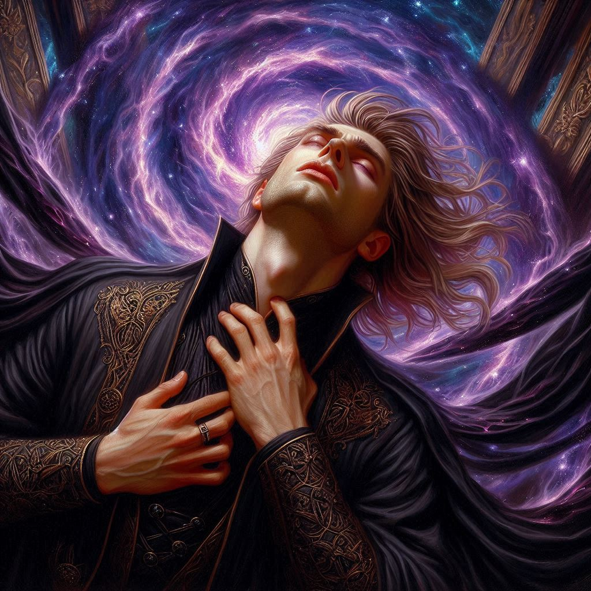
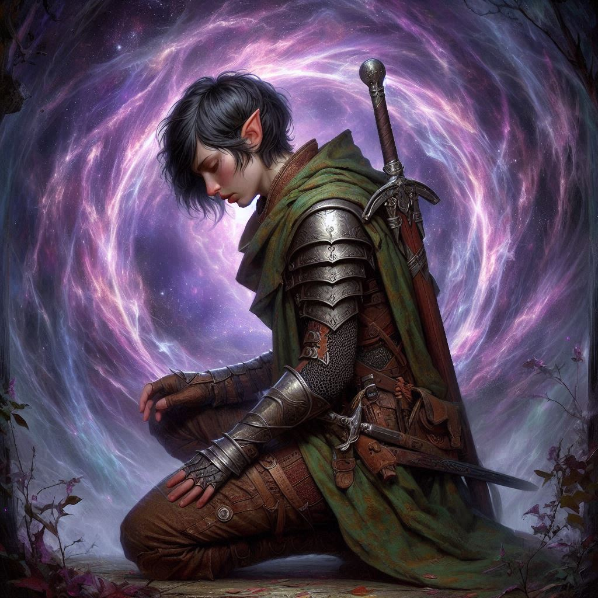

One Last Mystery
You stand with your bow drawn, eyes fixed on Jorsh. His dark cloak ripples like shadows against the cavern walls, magic sparking at his fingertips. He looks different now, older and hardened, yet the boy you once knew is still buried beneath the anger. The words to arrest him form on your tongue, but they catch in your throat as you meet his eyes.
"Kira," Jorsh says, his voice hoarse, filled with the same desperation you saw the night he disappeared from Belladonna. "You don’t understand. I’m doing this for us—for everything we’ve lost."
Your grip tightens on the bowstring. The princess lies bound behind him, her eyes wide, pleading silently for your help. Liora, the sorceress, lies unconscious to the side, taken down in the opening moments of Jorsh's ambush. You can feel the weight of your oath to the princess pulling at you like chains—your duty is to her. Yet, a part of you, the part that remembers Jorsh as more than a rogue sorcerer, falters.
"I don’t care why you're doing this, Jorsh," you say, trying to steady your voice, to sound as resolute as you can. "You've betrayed the kingdom, betrayed me. You have to answer for your crimes." You let the words settle like stone in the space between you.
A moment of silence passes, and Jorsh's expression hardens. His hand rises, magic swirling in the air between you. "I won't let you stop me, Kira," he growls. "I'm this close to avenging my father. Don’t you see? Varis is the real enemy. He’s using the kingdom, using all of us! I have to stop him before it's too late."
You feel the sting of old memories, but you push them aside. "Then we stop him together. Surrender now, and I’ll make sure you get a fair trial."
Jorsh’s laugh is bitter, hollow. "There’s no fairness in this world. You should know that by now."
In a heartbeat, he flings a wall of shadow between you, the air flickering violently with magic. You instinctively release the arrow, the string snapping against your fingers. The arrow pierces the barrier and finds its mark—Jorsh’s side. He lets out a cry, staggering backward, clutching the wound. Blood spills between his fingers, dark and ominous.
But still, he doesn’t stop.
Jorsh mutters an incantation, and a shimmering shield of light forms around him, protecting him from your next shot. He’s retreating deeper into the cavern, toward the Chamber of Portals. You can’t let him escape. Heart pounding, you give chase.
As you sprint through the twisting passages of Hemlock Caverns, the air grows thick with the scent of ancient magic. You know where he’s going—the Chamber of Portals. It’s the heart of Hemlock, a place where ancient powers converge. If Jorsh reaches it, you might not be able to stop him.
When you burst into the chamber, the sight before you is overwhelming. The ancient stone walls glow with runes, and at the center, an enormous portal swirls with dark energy. Beyond it, you glimpse shadowy figures—dark elves, Varis's minions, preparing to invade.
And there, in the midst of it all, stands Varis, his dark red robes flowing as he weaves magic into the portal, trying to open the way for his army. Jorsh staggers into the chamber, still clutching the arrow shaft protruding from his side, but he doesn’t hesitate. With a shout, he hurls a bolt of lightning at Varis.
The magic strikes, and the chamber erupts in chaos.
You hesitate for a moment, but you know what you must do. Ignoring the pain in your chest, you draw your bow and aim for Varis. Jorsh was not lying. The Minister of Trade. He’s the true threat. If he opens the portal, the dark elves will pour into the realm, and everything you’ve fought for will be lost.
With a deep breath, you release the arrow.
It flies true, striking Varis in the shoulder. He roars in pain, his spell faltering. Jorsh uses the opportunity to launch his own attack, his magic clashing violently with Varis's. The chamber shakes, the ground rumbling beneath your feet. Stone cracks, and the portal flickers, unstable.
Varis snarls, summoning a surge of dark power. Shadows crawl up the walls, reaching out to ensnare Jorsh. But Jorsh, weakened from your arrow, can’t hold them off. The shadows wrap around him, pulling him to his knees.
You charge forward, blade in hand, ready to end this. Varis turns toward you, his eyes glowing with fury, but he’s too late. With a swift strike, you drive your sword into his chest. Varis gasps, his magic faltering, and the shadows recede.
But the portal—it's still open, flickering and unstable, but open.
You rush to Jorsh’s side, kneeling beside him as he coughs, blood trickling from the corner of his mouth. He looks up at you, his face pale, his breath ragged. “I tried… I tried to stop him,” he whispers, his voice barely audible.
“I know,” you say, your heart heavy. “Together, we did it.” Against your will, a lump of emotion forms in your throat.
Jorsh’s hand reaches for yours, his grip weak. “I never stopped loving you, Kira. Even when I left… it was always you.”
Tears sting your eyes, but you don’t let them fall. “Jorsh, you didn’t have to do this. We could have found another way.”
His smile is faint, sad. “It was always going to end like this.”
With one last breath, Jorsh’s hand goes limp in yours. He’s gone.
You look up at the portal, the swirling darkness calling, but Jorsh’s body remains in your arms, a final reminder of everything you’ve lost. The dark elves beyond the portal, their war cries echoing faintly in the distance, remain just out of reach.
You stand, staring at the swirling portal, but you know the truth: Jorsh has left you one last mystery, and you’ll never know what lies beyond that doorway.